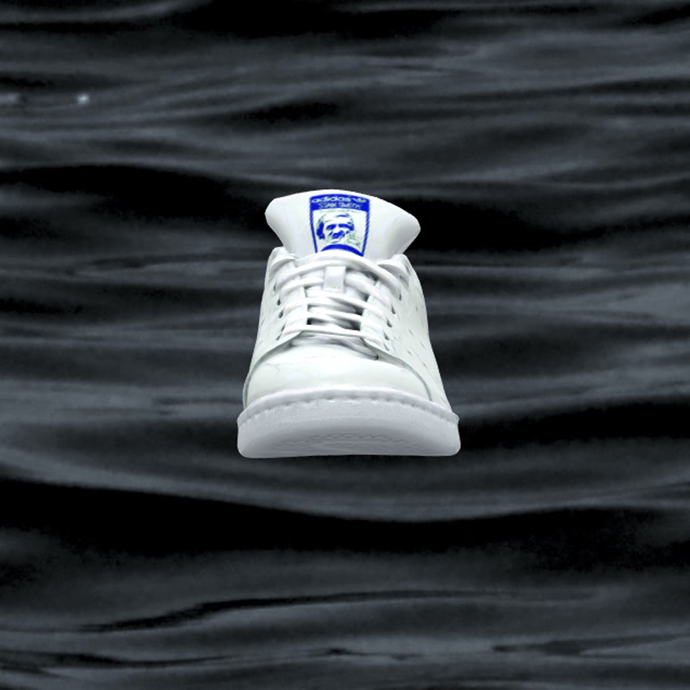
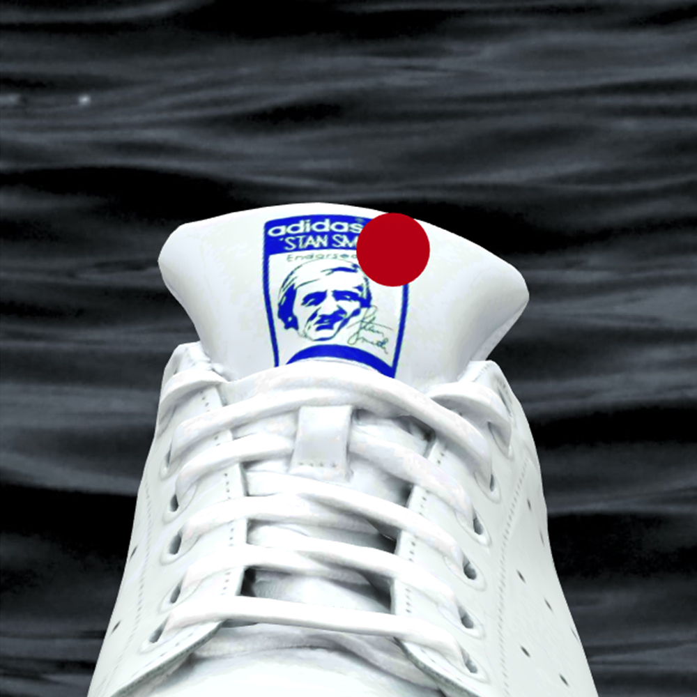
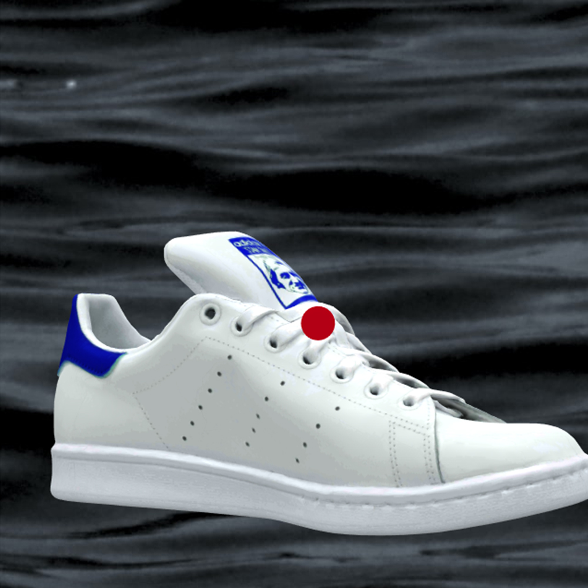
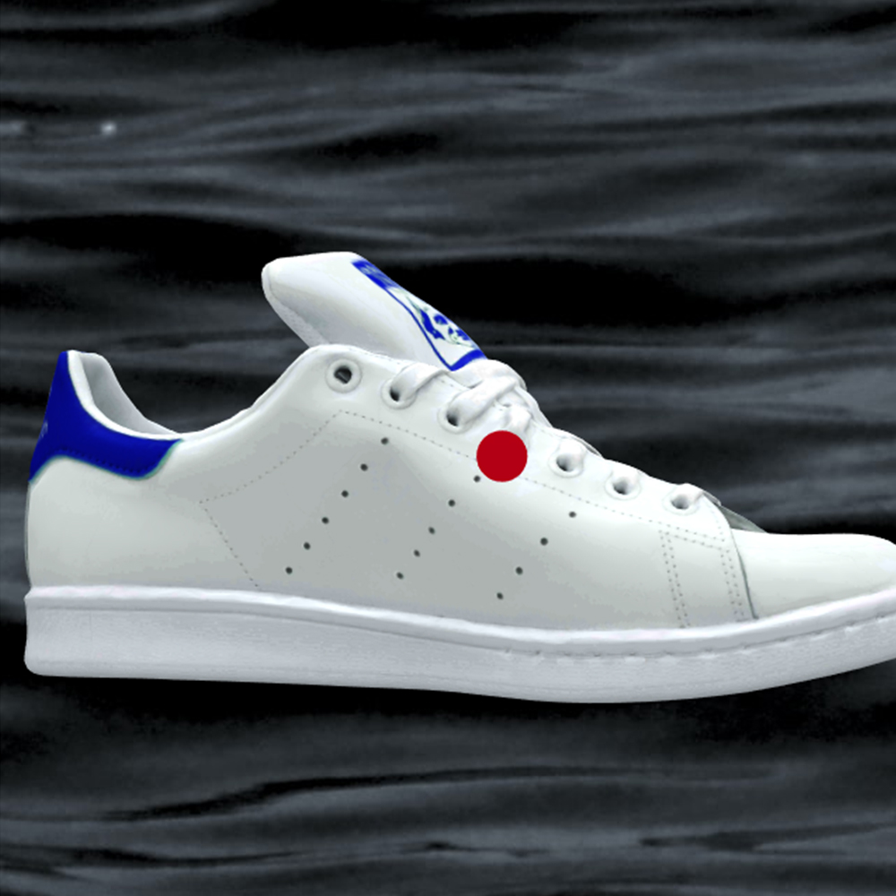
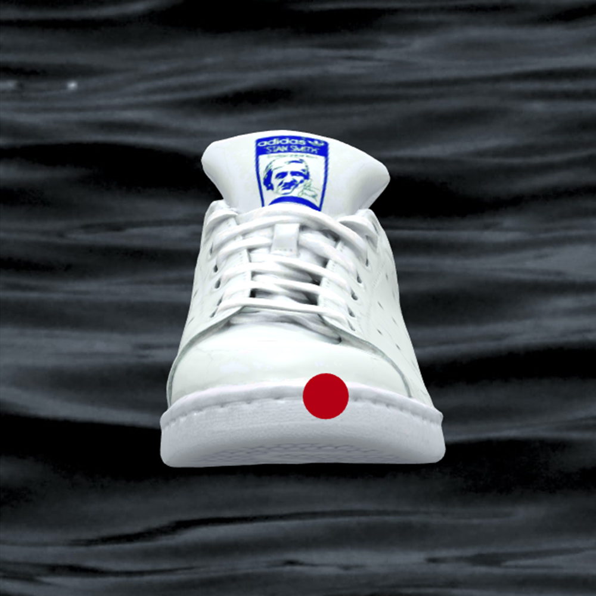
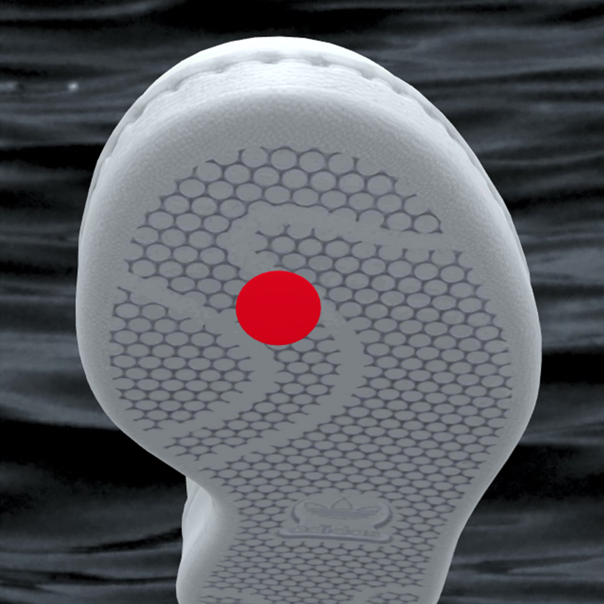
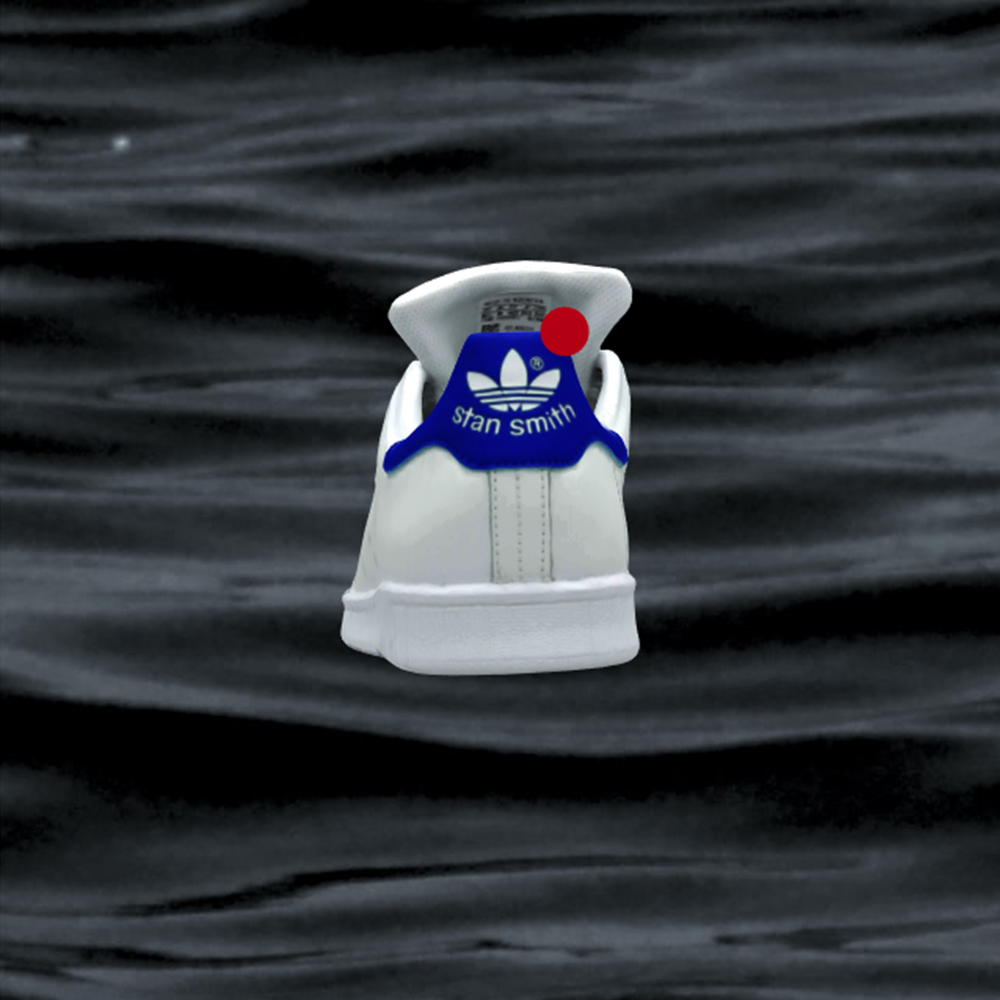

Adidas Stan Smith
 






Produktinformationen
Ein klassischer Tennis-Schuh von Adidas. Ideal für den täglichen Gebrauch in weißen Leder mit blauen Akzenten.
Auf der Schuh-Zunge befindet sich ein blaues Bild des Tennisspielers Stan Smith. Zusammen mit Adidas entwickelte er diesen Schuh
Der Schuh besitzt flache Schnürsenkel aus weißem Textil
An der Seite vom Schuh befinden sich 3 Streifen, aus kleinen Löchern. Dies sorgt für eine gute Luft im Schuh.
Die Schuhsohle ist mit einer Naht befestigt. Das führ zu einer längeren Haltbarkeit.
Die rutschfeste Sohle besteht aus weißem Gummi.
Die Ferse vom Schuh ist blau, mit einem weißen Adidas-Logo. Unten drunter steht Stan Smith. Die Ferse ist gepolstert. Somit ist ein ein einfacher Einstieg möglich.